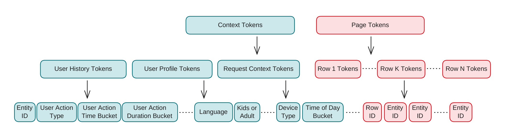
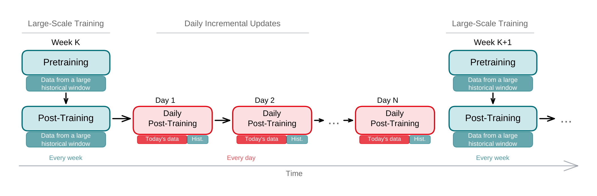
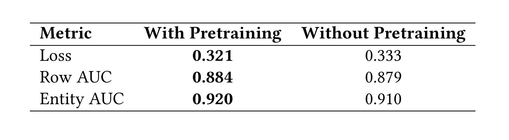
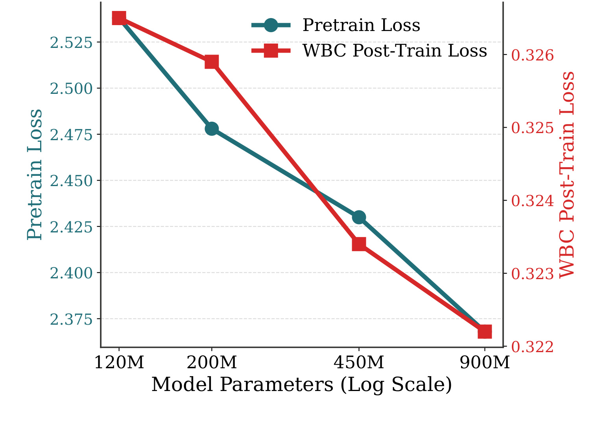
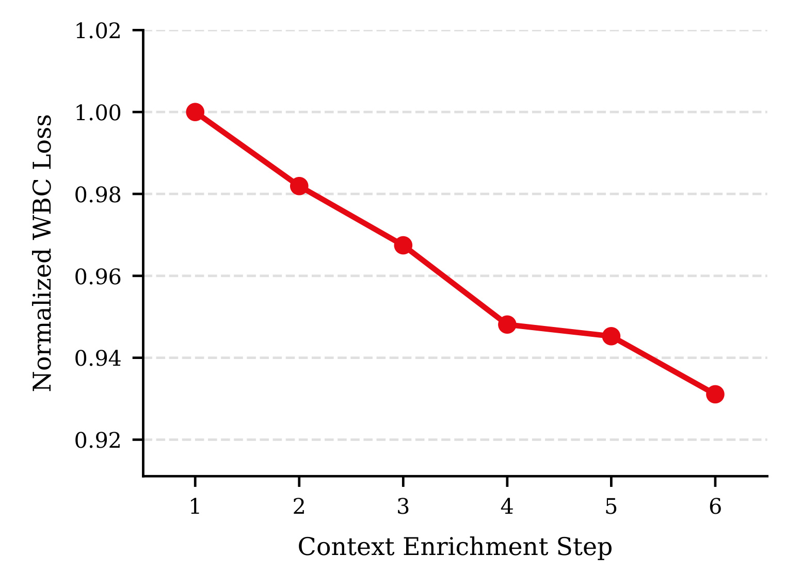
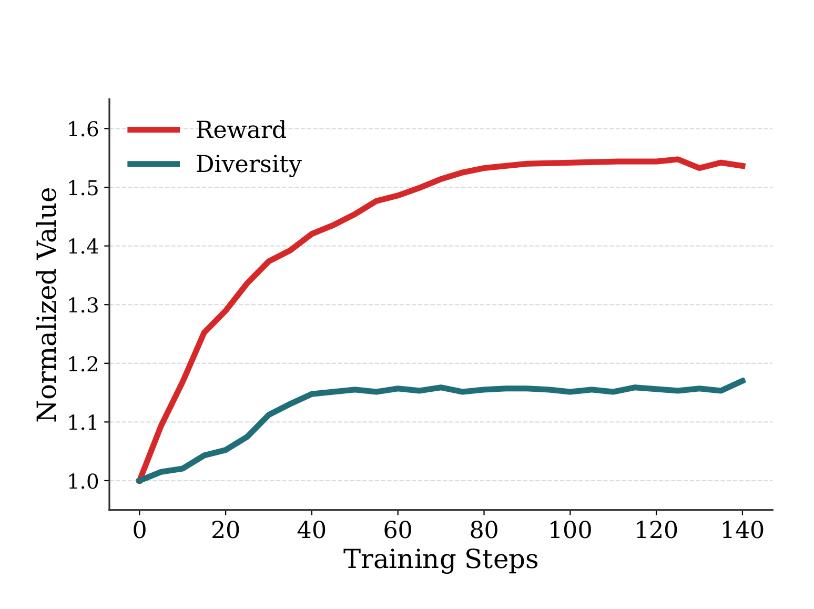
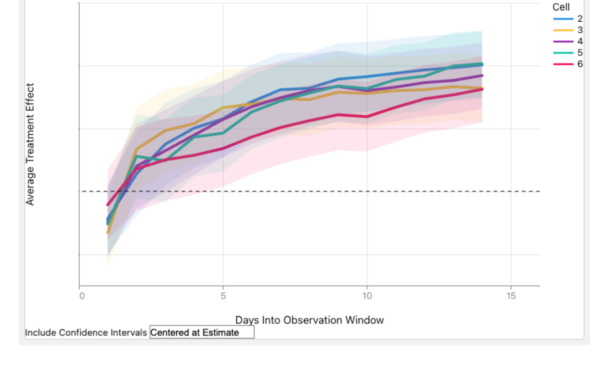

GenPage：Netflix 端到端生成式首页构建
[toc]
这篇论文来自 Netflix，题目是 GenPage: Towards End-to-End Generative Homepage Construction at Netflix，作者包括 Lequn Wang、Jiangwei Pan、Fengdi Che 和 Linas Baltrunas，一作主机构为 Netflix，合作信息中包含 University of Alberta 实习/合作作者。论文入口是 arXiv:2606.31031，公开日期为 2026-06-30。代码或项目页状态：本轮只核验到论文入口，未在 arXiv 页面或论文首页确认公开代码仓库。
这篇文章值得单独精读，是因为它不是把生成式推荐停留在“把 item id 当 token 排一个列表”的层面，而是直接把 Netflix 首页这种多行、多实体、多约束、强在线延迟要求的产品界面变成一个自回归生成问题。作者真正想证明的是：一个 decoder-only transformer 不只是能做离线排序实验，也有机会替代成熟生产系统中的多阶段首页推荐栈，并在用户参与度和服务延迟上同时给出线上证据。
传统首页推荐把候选生成、排序、重排、行生成和实体选择拆成多阶段系统，但 Netflix 首页真正要输出的是带有行、实体、布局顺序和业务约束的整页结构；如果各阶段分别优化，模型目标、特征工程、延迟预算和整页用户满意度之间就会长期错位。GenPage 要回答的是：在已知用户与请求上下文时，能否让一个生成式模型直接生成整页首页，而不是再由一串专用模型拼装。
1. 背景和问题
Netflix 首页推荐的难点不只是“给用户排一列内容”。首页由多行组成，每一行有自己的主题、位置、实体集合和视觉呈现，用户看到的是一个结构化界面，而不是独立 item 的线性排名。传统推荐系统往往把这个问题拆成候选生成、粗排、精排、重排、行级策略、去重和业务规则过滤等多个阶段。这样的工程形态有明显优势：每个阶段可以独立优化，线上风险可控，也方便插入人工约束。但它也带来一个长期成本：每个模块只看到局部目标，整页层面的满意度、行与行之间的互相影响、用户浏览时的停止点、以及内容多样性，很难被同一个目标函数直接优化。
论文把这个问题和大模型范式联系起来。LLM 的一个核心经验是，足够表达力的生成式 transformer 可以把“prompt 中的上下文”和“response 中的输出”统一到同一套序列建模框架里。GenPage 借用了这个范式，但没有简单照搬文本生成。它把用户历史、用户画像、请求环境当成 prompt，把首页的行 token 和实体 token 当成 response，让模型按照页面布局顺序自回归生成整页。这个建模方式的关键变化是：模型不再只给某个候选实体打分，而是在每一步生成时都能条件化于已经生成的页面前缀，因此行的位置、前面已经出现的内容、以及即将生成的内容都可以进入同一个上下文。
这也解释了为什么论文强调“首页构建”而不是“推荐列表生成”。很多生成式推荐工作关注平铺列表，主要问题是如何把 item id 放入 token 空间、如何做 generative retrieval、如何让大模型输出候选。GenPage 面对的是产品页面：行本身也是推荐对象，实体要落在具体行里，页面需要满足结构约束，还要处理新内容、业务规则、分页请求、实时会话信号和延迟预算。换句话说，推荐对象从“一个 item”变成“一个带层级结构的界面”。如果继续使用分阶段系统，行模型、实体模型、规则系统和延迟优化会不断互相补丁化；如果使用端到端生成式模型，就要证明它能接住这些生产约束。
论文的另一个背景是 Netflix 的 reward system。作者没有公开绝对业务指标，但说明内部奖励系统已经通过线上 A/B 调优，用来对长期用户满意度进行近似。GenPage 的监督信号不是人工偏好标注，而是来自用户对页面中被曝光实体的真实反馈，例如播放、点赞、放弃等行为。这样做的优点是数据量充足，缺点是外部无法复现同样的 reward，也无法知道 reward 对长期留存、短期参与、内容生态和商业目标的具体权衡。阅读这篇论文时要把它看成“工业系统经验论文”：它给出了结构化建模、训练配方和上线证据，但很多关键量都依赖 Netflix 内部数据与指标。
问题的核心可以拆成四层。第一层是表示：如何把不同来源的用户上下文、请求上下文和首页输出变成一条可训练、可服务的 token 序列。第二层是优化：预训练能否学到“Netflix 首页语言”，WBC 能否把实体级奖励变成 token 级价值估计，RL 能否进一步做整页优化。第三层是生产约束：新实体缺少交互数据，目录每天变化，业务规则必须严格满足，线上延迟不能失控。第四层是证据：离线损失、AUC、扩上下文、扩模型、RL 多样性和线上 A/B 是否共同说明生成式首页真的优于成熟生产栈，而不是只在一个离线指标上看起来更好。
我读这篇论文时最关注的不是“用 transformer 做推荐”这个表层说法，而是它把首页推荐中的结构化输出、真实用户反馈和生产工程约束放进同一条训练与服务链路。只有同时处理这三件事，生成式首页才可能从研究原型走向上线系统；任何一环缺失，都会退化成离线排序模型或不可控的页面生成器。
2. 方法
2.1 把首页构造成 prompt-response 序列
GenPage 的第一步是重写数据表示。每个训练样本对应一次首页曝光，包含三类信息：用户与请求上下文、实际展示给用户的页面、以及用户对页面上实体的反馈。真正进入模型输入输出的是前两类：上下文 token 作为 prompt，页面 token 作为 response；反馈不直接作为 token，而是进入奖励系统，供后训练使用。这里的 核心机制是把整页首页序列化为“上下文 token + 页面 token”的统一序列，让 transformer 在生成行和实体时看到相同格式的历史和页面前缀。
作者没有使用通用文本 tokenizer，而是构造领域 tokenizer。用户历史中的一次行为会被拆成 entity id、action type、time bucket、duration bucket 等离散 token；用户画像会包含语言、儿童或成人 profile 等信息；请求上下文会包含设备、时间段等实时信号。页面部分则把 row 和 entity 都表示成单 token，并按布局顺序从左到右、从上到下写入序列。这个选择有两个直接后果：一是序列长度比文本描述短得多，线上推理更便宜；二是 row/entity token 与产品概念一一对应，后续业务规则可以直接映射为 token mask。

Figure 1 是整篇方法的入口图。左侧的 context tokens 不是一段自然语言，而是由用户历史、用户画像和请求上下文共同组成的结构化 prompt；右侧的 page tokens 也不是普通文本，而是 Row 1、Row K、Row N 以及每行内部 entity 的序列化表示。图里最重要的是“上下文”和“页面输出”共享同一个 token 序列建模框架：模型先读完用户侧与请求侧信号，再像生成文本一样逐个生成首页行和实体。这样做的好处不是形式上更像 LLM，而是让页面前缀成为后续生成的条件：前面已经生成了什么行、什么实体，会影响后面继续生成什么，从而给整页约束和行间互相作用留下了建模空间。需要注意的是，图中仍然体现出工程折中：过长的数据源不能全部原样 token 化，论文承认会使用摘要版本，这意味着“端到端”还没有完全摆脱 prompt engineering。
分页推荐也是这个表示的一部分。Netflix 首页常常不是一次生成完整无限页面，而是用户向下浏览时分批请求下一组行。GenPage 会把之前已经推荐出的 page tokens 追加到下一次请求的 prompt 中，同时加入用户对前面几行的最新会话行为。这样模型既能利用长期兴趣，又能快速响应本次 session 中刚发生的播放、浏览或跳过。这个设计把传统系统中常见的“实时会话特征”变成了生成上下文的一部分，不需要为每一种行为手写一个独立特征交叉。
2.2 奖励系统与 decoder-only transformer 的接口
论文的 reward system 是 GenPage 能从“模仿生产页面”走向“优化用户满意度”的关键。对于一次首页曝光，内部奖励系统会给每个被曝光实体输出一个标量奖励。高满意度行为，例如长时间观看或强正反馈，会给出更高 reward；曝光但被放弃的实体会得到负向 reward。作者把页面级 reward 定义为页面上所有被曝光实体 reward 的求和：
符号解释：(R_{page}) 表示整页级奖励；(\mathcal{I}(page)) 表示当前首页页面中被曝光的实体集合；(r_e) 表示内部奖励系统为实体 (e) 根据用户反馈给出的标量奖励。这个公式不是论文中的编号公式，而是对 Section 3 文字定义的直接符号化。它说明 GenPage 的“整页优化”至少在 reward 聚合上已经越过单实体评分：页面中每个实体的反馈都会进入同一个 page-level signal。
模型结构本身是标准 decoder-only transformer。作者特别提到没有绑定 input embedding 和 output projection，因为 next-token 预训练与 WBC 后训练需要的 logit scale 不一样：前者是 softmax 下的下一个 token 预测，后者是 per-token sigmoid 下的价值估计。在线实验阶段使用约 200M 参数模型，理由不是这个规模最优，而是它在当前服务延迟预算内可行。这个细节很重要：论文不是展示“越大越好”的大模型 demo，而是在一个成熟首页推荐链路中寻找可上线的模型容量、上下文丰富度和推理成本平衡。
2.3 预训练、WBC 后训练与 RL 后训练
GenPage 的训练配方对应 LLM 中常见的两段式思路：先预训练学“语言”，再后训练对齐目标。这里的“语言”不是自然语言，而是 Netflix 首页的结构语言：什么样的上下文后面通常接什么行，什么行里通常出现什么实体，生产系统曾经如何组织页面。预训练使用 next-token prediction，数据来自生产中获得正反馈的首页曝光。这个阶段的作用更像初始化：让模型先学会生成看起来合理、符合生产分布的页面，而不是从随机策略开始探索。
WBC 是论文当前已经线上验证的后训练路线。它把每个 row/entity token 的 logit 解释为“在当前位置生成这个 token 的即时价值估计”。训练时，奖励的正负号变成二分类标签，奖励幅度变成样本权重，然后对对应 token 的 logit 优化 weighted binary cross-entropy：
符号解释：(z_i) 是第 (i) 个 row 或 entity 目标 token 在当前位置的 logit，也就是价值估计；(y_i) 是由 reward 符号得到的二元标签；(w_i) 是由 reward 幅度得到的样本权重；(\sigma) 是 sigmoid 函数。这个目标的直觉是：模型仍然自回归生成页面，但每一步选择 token 时更倾向于选择在历史反馈中有高即时价值的 row/entity。随机 negative token 还会被采样进训练，论文认为这给低频 token 引入了一种温和的悲观先验，避免噪声把小众实体推得过高。
WBC 的优点是 credit assignment 清楚。因为 custom tokenizer 把一个 entity 或 row 压成单 token，实体级 reward 可以直接对齐到这个 token；如果一个实体需要多个 token 表示，WBC 就不知道如何把同一个 reward 分摊到多个 token 上。RL 正是为了解决更完整的整页优化而引入。论文把 page generation 看作序列决策：policy 生成一整页，reward model 预测这页的 outcome reward，并用 KL penalty 把 policy 拉回到预训练参考模型附近，防止它偏离生产分布太远、钻 reward model 的空子：
符号解释：(\pi) 是从预训练 checkpoint 初始化的生成策略；(\hat{R}(page)) 是 reward model 对候选页面 outcome reward 的预测；(\pi_{ref}) 是作为 KL 参照的参考模型；(\beta) 控制偏离参考策略的惩罚强度。这个式子概括了论文的 RL 思路：既希望页面级 reward 变高，又不能让生成页面离生产可覆盖区域太远。作者使用 Dr. GRPO、verl 和 vLLM 搭建训练，但也明确指出 RL 尚未线上发布，离线评估还有循环性问题，因为 policy 优化的 reward model 也被用来评价 policy。
2.4 生产约束：冷启动、新鲜度、规则和延迟
真正让 GenPage 接近工业系统的，是第 6 节对生产挑战的处理。冷启动方面，新实体缺少交互数据，单靠 entity id embedding 很弱。作者使用两种补丁：一是 context injection，把新内容或时间敏感内容的元数据直接放进上下文 token；二是 semantic embedding fusion，把 entity id embedding 与由剧情简介、演员、字幕、类型、视频内容等语义信息得到的 embedding 融合。训练时还会小概率把已知 entity id 替换为 fallback token，让模型学会在没有稳定 ID 交互历史时也能依赖语义 embedding 推荐。

Figure 2 展示了新鲜度问题的工程解法。左侧和右侧是较低频的大规模训练周期：在宽历史窗口上做预训练和后训练，给模型提供稳定基座；中间是每天发生的 incremental post-training，用当天最新数据加上抽样历史数据继续更新。这个图的重点不是“每天训练一次”这么简单，而是两种时间尺度的组合：如果只做大规模离线训练，模型对新目录和新趋势反应慢；如果只拿最近一天数据更新，又容易过拟合和灾难性遗忘。GenPage 的方案相当于把推荐系统常见的 freshness 要求写入生成式模型训练节奏里。图中每个 daily update 下面都有 today's data 和 hist.，这说明作者并没有把新鲜度理解成只追逐最新流量，而是用历史样本维持分布稳定。
业务规则的处理也依赖 tokenization。Netflix 首页必须满足去重、行固定、类别一致性、资格过滤等规则，训练信号只能鼓励，不能保证。GenPage 在每一步自回归生成时计算 eligible token mask，把不合规 token 的 logit 屏蔽掉。由于 row 和 entity 都是单 token，规则可以直接作用在词表位置上；如果使用多 token 文本表示，同一个实体跨多个 token 时规则约束会复杂得多。延迟方面，论文提出 hybrid row decoding：每行最前面的若干实体仍然自回归生成，因为它们决定行的主题和用户注意力；后面的实体则在给定前缀后通过一次 forward pass 选择 top-scoring eligible entities。这个设计保留了关键位置的上下文依赖，同时减少长行逐 token 解码的成本。
3. 实验结果
3.1 预训练是否有用
论文的实验分成离线和线上两部分。先看离线。由于没有公开数据集能覆盖 Netflix 这种结构化首页、行与实体级反馈、内部 reward 和生产约束，所有实验都基于 Netflix 内部数据。作者也提醒不同 ablation 可能来自不同训练配置和数据快照，因此要更重视同一实验内部的相对比较，而不是把不同图之间的数值当作严格可比。第一组实验回答一个基础问题：在 WBC 后训练之前做 next-token pretraining 是否有价值。

Table 1 给出了三项指标。带预训练时，Loss 为 0.321，Row AUC 为 0.884，Entity AUC 为 0.920；不带预训练时，Loss 为 0.333，Row AUC 为 0.879，Entity AUC 为 0.910。表面看 AUC 提升只有千分位到百分位，但作者强调在成熟生产系统里这类提升并不小，尤其 Entity AUC 从 0.91 到 0.92 等价于随机抽取一对曝光实体时误排序率从 9% 降到 8%。这个解释很有工业味：成熟系统的空间通常被多轮迭代压缩，单个改动很难带来大幅 AUC 跳变。这里更重要的结论是，预训练不是多余步骤；它为 WBC 提供了“首页语言”的良好初始化，让后训练不是从零学习 row/entity 的结构关系。
这个结果也揭示了 GenPage 和普通监督排序模型的差异。传统 ranker 通常直接从候选特征到点击或播放目标学习，预训练可能表现为表征学习或迁移学习；GenPage 的预训练则是在学习页面生成分布。它先模仿历史生产系统中获得正反馈的页面，再通过 WBC 改写 token 价值。这意味着它既继承生产系统的布局和规则经验，也有可能继承生产系统的偏差。表格只能证明预训练提升了当前内部评估集上的 WBC 表现，不能证明它已经学到更公平、更长期或更探索性的页面策略。
3.2 模型规模与上下文信息哪个更重要
第二组实验看模型规模。作者从约 120M 扩到 900M 参数，观察 pretraining loss 和 WBC post-training loss。这个实验对推荐系统读者有一个重要信号：生成式推荐不是只能靠小模型工程拼接，它在一定范围内也呈现类似 LLM 的 scaling trend。随着参数规模变大，两条 loss 都下降，说明同一数据表示和训练配方下，更大容量可以继续吸收结构化首页分布中的信息。

Figure 3 的横轴是模型参数量的对数尺度，纵轴分别展示 pretrain loss 和 WBC post-train loss。两条曲线都随 120M、200M、450M、900M 递增规模而下降，红色 WBC 曲线尤其在 200M 到 450M 之间下降明显。这个图支持作者的“scaling behavior”判断：在当前范围内，GenPage 还没有到容量完全饱和的状态。对工程落地的含义是，如果 hybrid decoding、缓存、批量推理或模型压缩继续释放延迟预算，Netflix 可以把节省下来的延迟 headroom 换成更大模型或更丰富 prompt，而不是必须停在 200M。但图也没有给出成本曲线、吞吐曲线或线上收益曲线，所以不能直接推断 900M 一定值得上线。
更有意思的是上下文丰富度实验。作者在固定模型规模下逐步加入新数据源、改进 tokenization，并观察 normalized WBC loss。论文文字给出一个对比：从 120M 扩到 900M 大约降低 WBC loss 1.3%，而上下文增强累计带来大约 6.9% 改善。由于这两个实验不是同一个严格可控轴，作者没有说它们完全可比，但这个量级差异足以说明当前瓶颈更像“模型知道的信息不够好”，而不是“模型不够大”。

Figure 4 中，横轴是 context enrichment step，纵轴是归一化 WBC loss。曲线从 1.0 一路降到大约 0.93，说明每一轮上下文补充或 tokenization 改进都带来额外收益。这个图对推荐系统工程尤其重要：在个性化任务中，模型容量只是上限之一，prompt 中是否包含足够新鲜、足够可辨别、足够低噪声的用户与请求信息，可能更早决定效果。GenPage 虽然宣称减少传统特征工程，但并不意味着完全不设计输入；相反，它把特征工程从模型外部的多阶段手工特征，迁移到结构化 prompt 设计和 tokenizer 设计。论文自己也承认，长历史仍需摘要化，这会重新引入人工压缩与信息选择。对复现者来说，Figure 4 也提醒不要把“端到端”误读成“输入随便堆给模型”：上下文来源、离散桶边界、特殊分隔 token 和实时信号进入 prompt 的方式，都会成为效果差异的主要来源。
3.3 RL 后训练是否体现整页优化
RL 后训练是论文愿景里最接近“整页优化”的部分，但它还没有线上发布。离线实验展示的是 reward 和 diversity 随训练变化。作者使用 reward model 评价策略生成的页面，因此 reward 上升在某种意义上是预期结果；更值得看的是 diversity 也上升，而 diversity 并没有写入 RL 目标。这被作者解释为 policy 可能学到了页面整体层面的优化，而不是只对单个 token 做贪心提升。

Figure 5 的红线 reward 从 1.0 附近快速上升到 1.5 以上，蓝绿色 diversity 也从 1.0 上升到约 1.15-1.17 后趋于平稳。这个结果给 GenPage 的 RL 路线提供了一个有趣信号：如果页面级 reward 需要兼顾行间互补、重复控制、不同停止力内容的平衡，那么优化整页可能自然减少过度集中。可是这里必须谨慎。第一，reward 来自模型预测，不是线上用户真实反馈；第二，diversity 的定义是页面中实体 embedding 的 pairwise distance，未必等价于用户感知到的多样性；第三，RL policy 受 KL 约束靠近预训练分布，这既限制 reward hacking，也可能限制真正探索。我的理解是，Figure 5 证明了 RL 值得继续做，而不是证明 RL 版本已经优于 WBC 或生产系统。
3.4 线上 A/B：参与度提升与延迟下降
最关键的证据在第 8 节。论文上线评估的是约 200M 参数的 WBC 版本，而不是 RL 版本。在线 A/B 对照的是 Netflix 当前生产首页推荐系统，且 GenPage 在已有生产 row/entity candidate sets 上解码，这些候选集也帮助处理 eligibility 等业务规则。这个设定很重要：GenPage 并不是完全从全库自由生成所有内容，而是在生产候选与规则边界内生成首页结构。它替代的是多阶段 ranking/feature-heavy 流程中的一大部分，但仍然借用了一些生产系统基础设施。

Figure 6 展示五个 GenPage variant 相对 baseline 的 average treatment effect，带有 95% confidence interval。论文文字说明五个 variant 都在 launch decision 使用的核心参与指标上达到统计显著，最好的一组 day 14 相对提升 +0.24%，95% CI 为 [0.17%, 0.30%]，(p < 0.001)。图里的多条曲线虽然涨幅不同，但方向一致，这说明结果不是某一个训练数据过滤或 negative 配置偶然带来的。更值得注意的是，作者同时报告端到端 serving latency 降低 20%。这和“生成式模型一定更慢”的直觉相反，原因在于它替代了多阶段 ranker 和重特征计算，再加上 custom tokenization 与 hybrid row decoding 降低了生成步骤。
线上结果也暴露了边界。作者观察到曝光实体类别分布出现未预期变化，例如新内容与成熟内容、剧集与电影的分布偏移。论文没有说这些变化一定是负面，只说需要进一步调查。这个现象非常真实：当一个更强的个性化模型接入成熟产品后，它可能优化了参与度，却改变了内容生态、探索比例或业务策略的隐含平衡。作者推测 GenPage 可能提高了 homepage impression efficiency，即用户用更少曝光找到想看的内容；但这只是解释之一，不应被读成已经验证的长期满意度提升。对生产推荐而言，A/B launch metric 只是必要证据，类别分布、冷启动公平性、内容供应侧目标和长期留存仍需后续 guardrail。
总体看，实验链条比较完整：Table 1 支持预训练，Figure 3 支持容量 scaling，Figure 4 说明上下文质量更关键，Figure 5 给 RL 整页优化提供离线线索，Figure 6 给 WBC 版本提供线上证据。缺口也很清楚：没有公开数据集，内部 reward 不可复现，RL 未线上，线上指标匿名，具体业务规则和候选集细节没有披露。因此这篇论文最强的价值不是提供一个可直接复现的 benchmark，而是提供了大型内容平台如何把 LLM 训练范式改造成推荐首页生产系统的一套可借鉴设计。
4. 总结
4.1 我的判断
GenPage 的贡献在于把“生成式推荐”从候选列表推进到页面构建。它没有只讨论 item tokenization，也没有只给离线 recall 或 NDCG，而是把数据表示、预训练、WBC、RL、冷启动、新鲜度、规则约束、hybrid decoding 和线上 A/B 放在同一篇系统论文里。对推荐系统工程来说，最重要的启发是：端到端不等于不要工程约束，而是把工程约束重新放进 tokenization、mask、训练节奏和推理策略中。这篇论文真正有价值的地方，是展示了一个生成式模型如何在成熟生产首页推荐栈中获得可上线收益，而不是单纯宣称 transformer 可以做推荐。
我会把它看作 Netflix 对“推荐系统是否会逐渐 LLM 化”的一次强信号。论文最后也提到，未来可能把领域 token 与通用文本 token 混合，既保留结构化控制，又继承通用 LLM 的语言、多模态和推理能力。如果这个方向成立，推荐系统和 LLM 的边界会变得更模糊：推荐不只是检索加排序，LLM 也不只是文本生成，而是都在学习如何根据上下文生成满足约束的个性化输出。
4.2 工程启发与复现建议
如果要把这篇论文迁移到其他推荐场景，我会先复现表示层，而不是直接复现 RL。第一步是明确推荐输出是否具有结构：电商首页的楼层、短视频 feed 中的多目标插槽、音乐首页的 shelf、广告混排页都不只是单列表。第二步是设计领域 tokenizer，把用户历史、请求上下文、模块、实体、位置和业务约束变成可 mask 的 token。第三步是先做 next-token pretraining 与 WBC 类目标，验证模型是否能在离线 AUC、loss 和线上小流量指标上接近或超过现有 ranker。只有在 WBC 稳定后，再考虑页面级 RL，否则 reward model 与离线评估的循环性会让训练很难判断。
复现实验时要特别关注四个风险。第一，内部 reward 是核心资产，外部数据集很难替代；如果 reward 只反映短期点击，生成模型可能更快放大短期偏差。第二，context enrichment 的收益很大，说明 tokenizer 与上下文设计不是小细节；输入质量差时，扩大模型可能只是在拟合缺失信息。第三，业务规则必须能映射到 token mask，否则生成式模型上线会被规则系统拖垮。第四，延迟收益不一定普遍存在；Netflix 的 20% 下降来自替代多阶段重系统，如果原系统已经很轻，生成式模型未必更快。
后续我会跟进三件事。其一，RL 版本是否能在线上超过 WBC，尤其是否能在多样性、长期满意度和类别分布 guardrail 上更稳。其二，混合 tokenization 能否把文本、多模态内容理解和结构化 row/entity token 放进同一个模型，而不牺牲规则可控性。其三，类似 GenPage 的方法能否在非 Netflix 场景中复现，例如电商首页、广告混排或信息流分页，因为这些场景的 reward、候选集和业务约束都更复杂。GenPage 给出了一个方向，但真正的通用性还需要跨平台证据。
4.3 局限与风险
这篇论文的局限也很明确。第一，所有关键数据都来自 Netflix 内部，没有公开数据集，外部只能复现思想，不能复现实验数值。第二，线上 A/B 只验证了 WBC 版本，RL 仍停留在离线探索；不能把 Figure 5 的结果当成线上 RL 有效证据。第三，reward system 的定义没有公开，用户满意度、参与度、内容生态和商业目标如何权衡不可见。第四，GenPage 仍依赖候选集、规则 mask、fallback token、摘要化长历史等工程组件，并不是完全无特征工程。第五，类别分布的未预期变化说明模型上线后可能改变平台供给侧和用户探索行为，需要长期监控。
这些局限并不削弱论文的系统价值，反而说明端到端生成式推荐的落地门槛在哪里。最值得学习的不是某个单点技巧，而是作者把模型能力、产品结构和线上约束放在一起迭代：先用领域 token 降低服务成本并保留规则控制，再用预训练学习页面语言，用 WBC 获得可上线收益，最后把 RL 作为整页优化的下一阶段。对于推荐系统工程团队，这是一条比“直接把 LLM 接到排序链路里”更稳的路径。